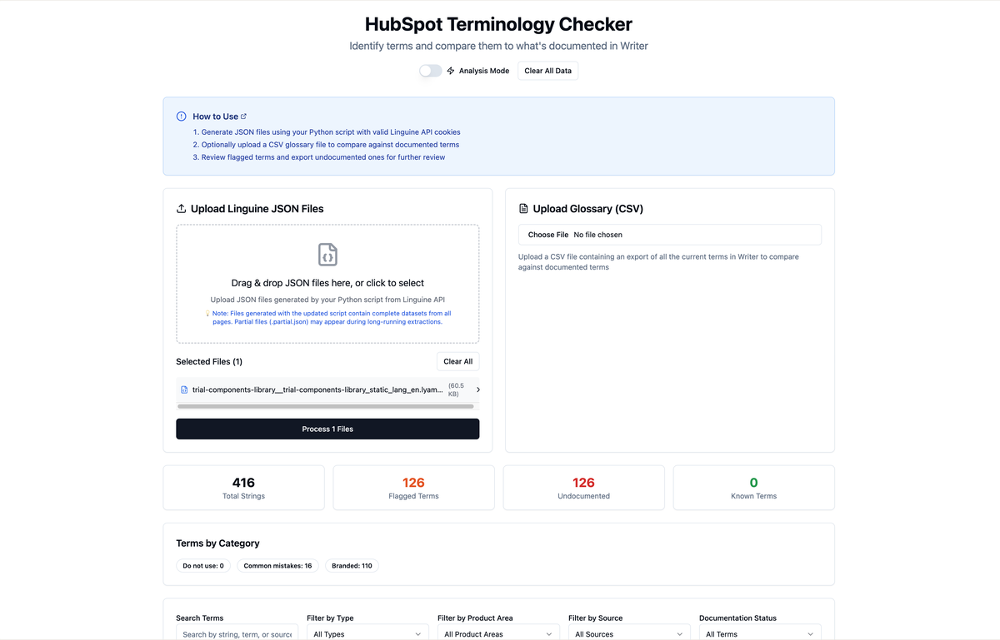
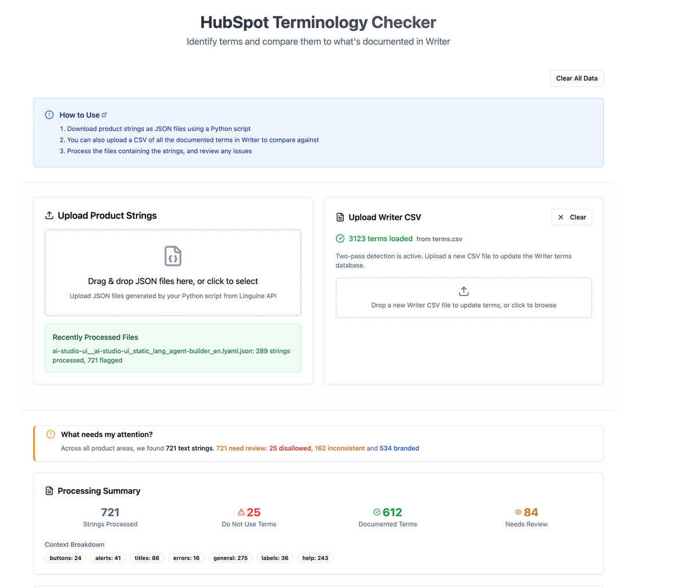
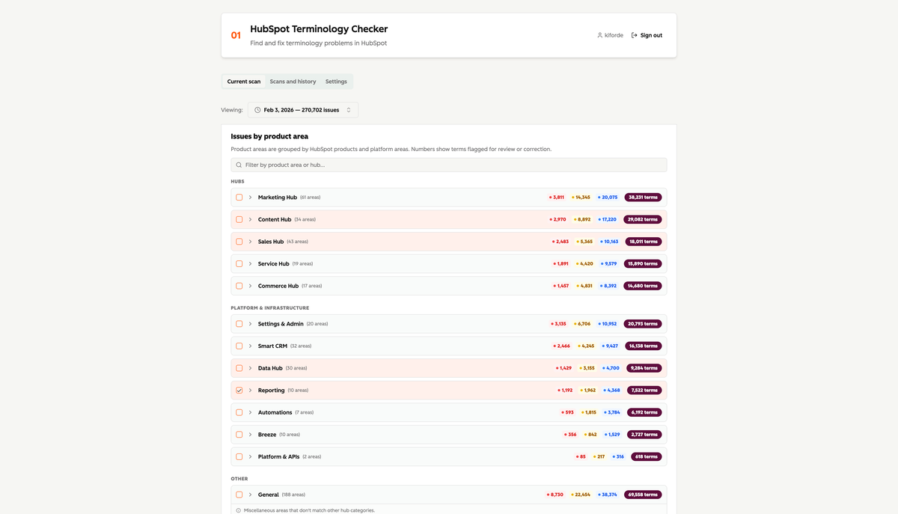

Why vibe code this?
Making the engineering case required something working, not a proposal.
The governance work (Strand 1) established the problem and the human infrastructure for fixing it. But to justify engineering investment in an automated checker, I needed something more concrete than a presentation: a working tool that demonstrated the approach was feasible, fast, and accurate.
Vibe coding the proof of concept on Lovable and Supabase was the right call at this stage. It let me move fast without waiting for engineering capacity, build a real artefact for demonstrating the concept, and generate actual benchmarking data to make the case. The goal wasn't to ship production software — it was to answer the question: does automated terminology checking work?
The answer was yes. And having a working tool meant that answer came with numbers, not assumptions.
The build
From first version to a tool that runs at scale.
The first version loaded UI strings from the Linguine API, compared them against Writer's term database, and flagged potential issues. It was basic — but it worked. 416 strings processed, 126 flagged terms identified, in under a second.

The first version — 416 product strings processed, 126 flagged terms identified. Upload JSON from the Linguine API, compare against Writer terms, review undocumented findings.
Subsequent versions improved the term loading, added severity grouping (Fix, Caution, Review, Document), and scaled to running full product area audits. By the time it was used for the Code Orange sprint, the checker was processing thousands of strings across dozens of product areas in a single run.
The benchmarking confirmed the core hypothesis: the tool detected 85%+ of terminology issues compared to a manual audit baseline, and ran in under a second versus the ~20 minutes a manual audit took.

A mid-point version of the tool — 3,123 Writer terms loaded, 721 product strings processed in a single run. 25 Do Not Use violations, 612 documented terms checked, 84 flagged for review.
Code Orange sprint
Using the app to run governance at scale.
In mid-2025, the terminology work paused on tool development to run a direct analysis sprint across HubSpot product lines — what became known as the Code Orange terminology work.
The vibe-coded app was the engine for this. I used it to scan live product strings across Automation, Data Hub, and Reporting, then used the findings to generate 22 targeted reports for DRIs across those product groups.
The reports identified 1,673 terms used incorrectly and 3,638 instances potentially needing documentation. Teams across all three product groups are actively working on these changes.
This sprint also revealed the limits of the vibe-coded approach. Running the audits required manual effort — pulling strings, running the app, generating reports. It couldn't run automatically, couldn't integrate into the PR workflow, and required a content designer to operate it. The case for the engineering rebuild was now undeniable.

The current version of the Terminology Checker — 270,752 issues identified and grouped by hub and platform layer across 47 product areas. Each area shows Fix, Caution, Review, and Document issue counts.
Results
What the proof of concept proved.
The detection rate benchmark. 85%+ of terminology issues found versus a manual audit baseline, completing in under a second. This was the technical validation needed to make the engineering case.
The Code Orange reports. 22 reports sent to DRIs across three product groups. 1,673 incorrectly used terms and 3,638 instances flagged. Teams are actively working on these changes.
The Staff-level signal. The work was cited in performance review feedback as demonstrating Staff-level impact — the first time automated content tooling had been built at this level within Content Design.
"The terminology tooling demonstrates Staff-level impact."
Jon Colman, Content Design Manager — performance review feedback, 2025
What changed
The proof of concept made the engineering rebuild inevitable.
The vibe-coded app did exactly what it needed to do: it demonstrated the concept, generated benchmarking data, and ran governance at scale during Code Orange. But a standalone app is not infrastructure.
The highest-leverage version of this work catches issues before they ship, not after. That requires integration into the engineering PR workflow — which requires an engineering rebuild. The proof of concept created the mandate for Strand 3.